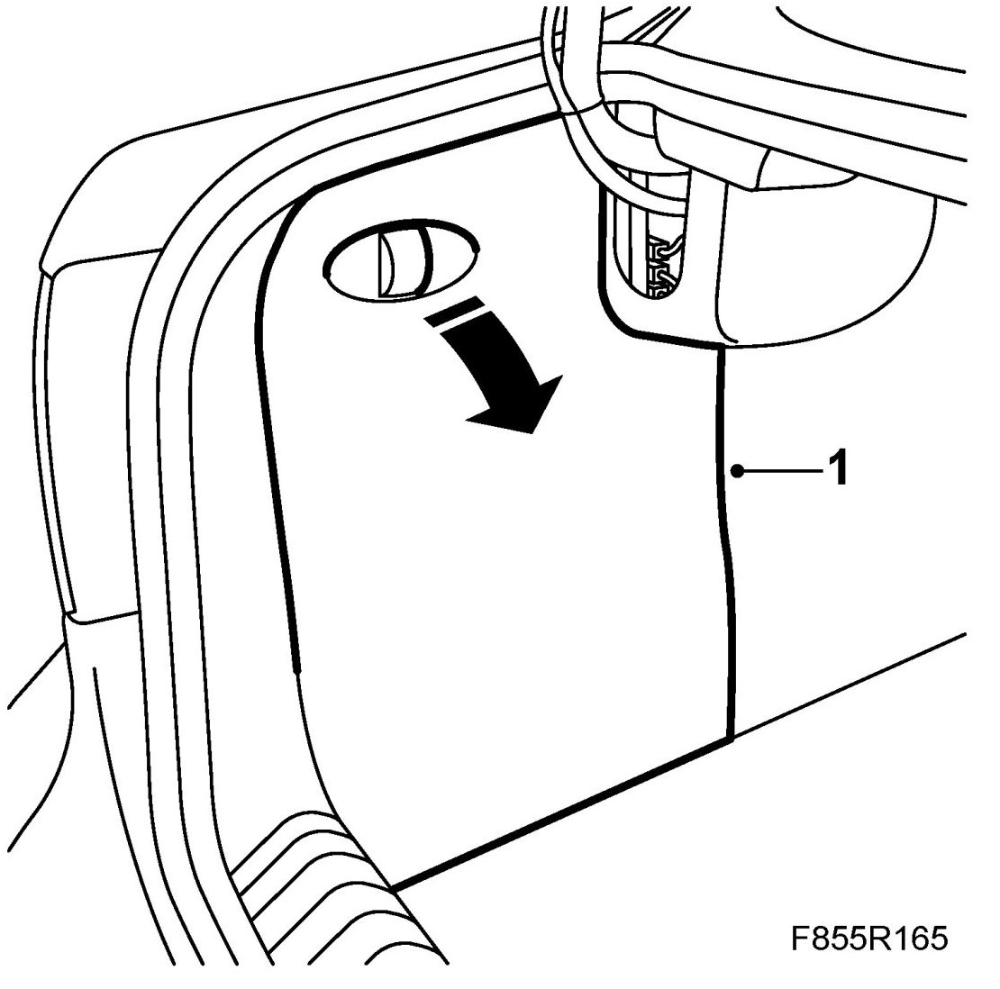
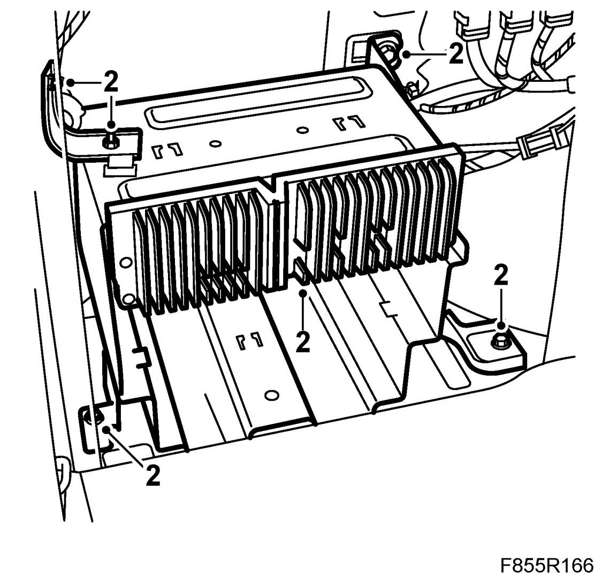
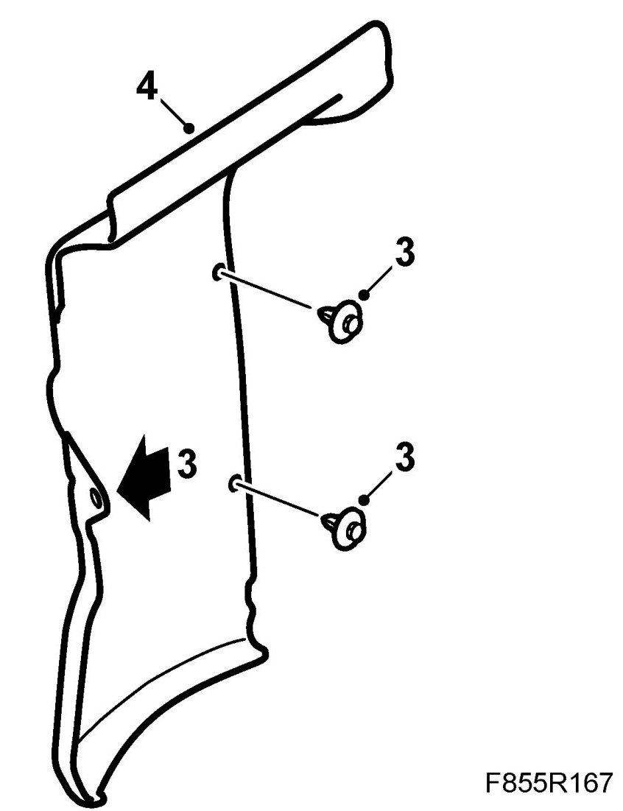
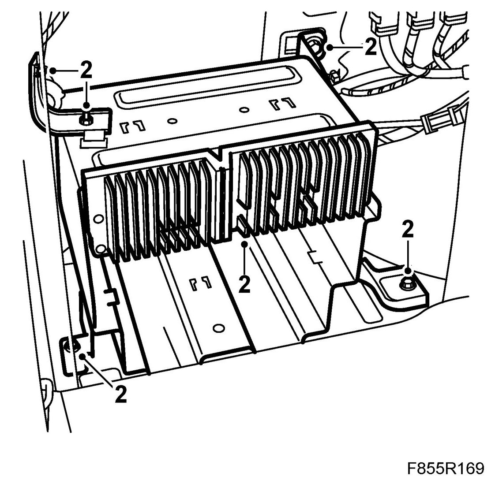
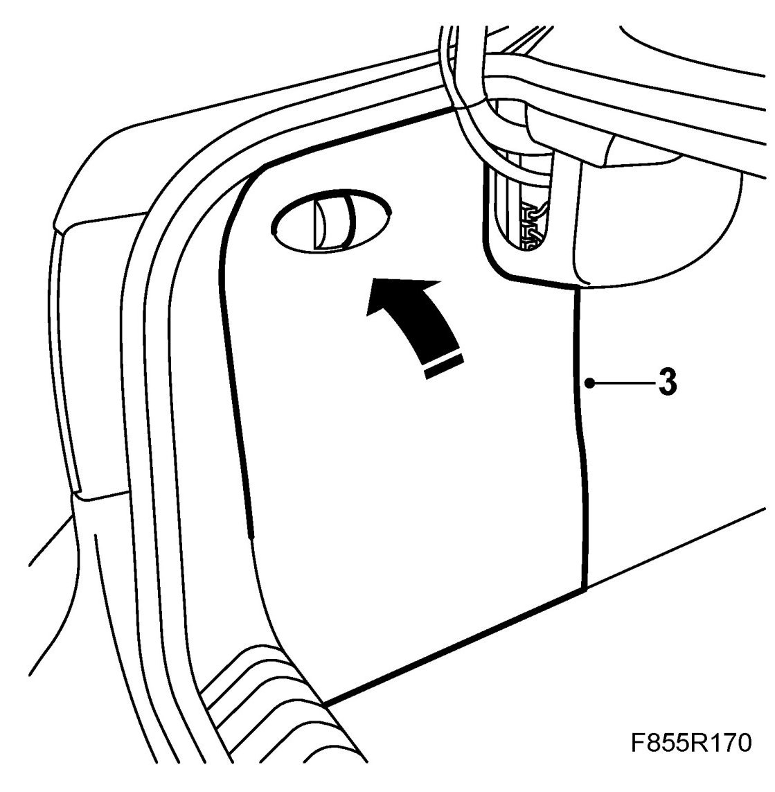

Sound Insulation, Luggage Compartment, Left-Hand.
Sound Insulation, Luggage Compartment, Left-Hand.
To remove
1. Open and fold down the left-hand rear inspection cover.

2. Remove the holder for the CD player.

3. Remove the two-stage rivets and the cable clip which hold the sound insulation to the body. Remove the sound insulation.

4. Remove the sound insulation.
To fit
1. Fit the sound insulation to the body, use the two-stage rivets and the cable clip.
2. Fit the holder for the CD player.

3. Fold up and close the inspection cover.
